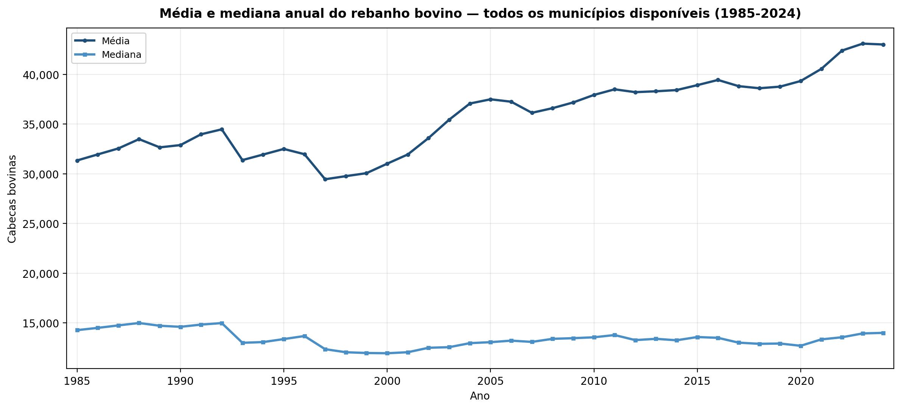
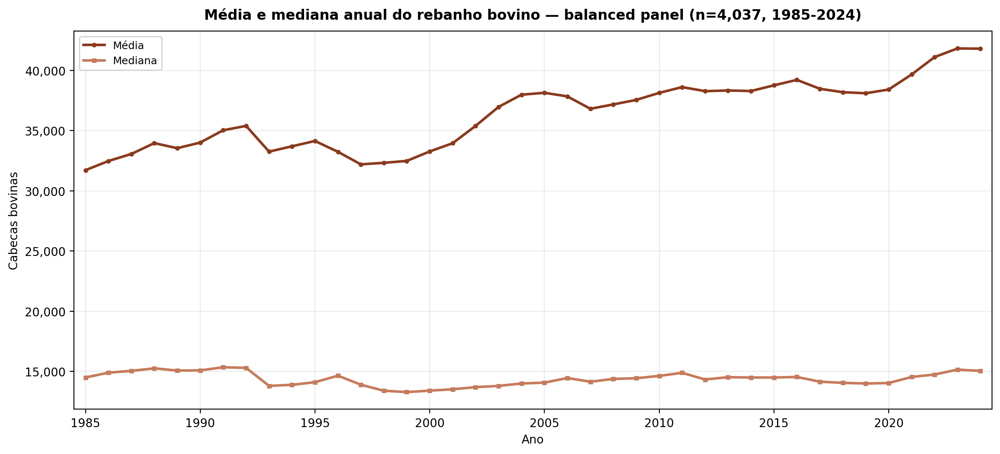
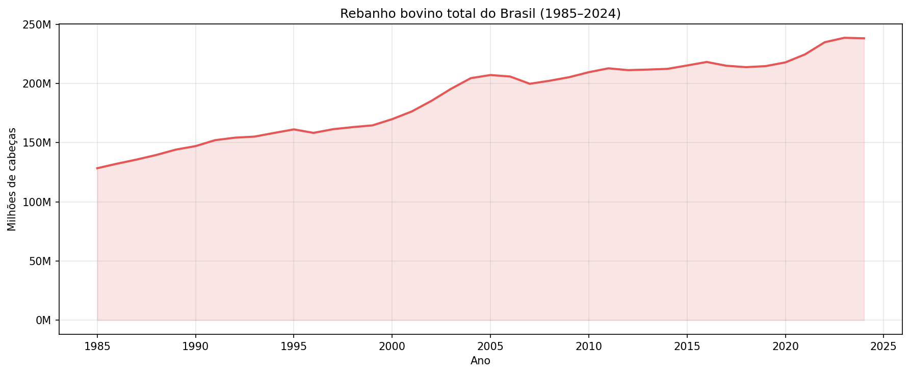
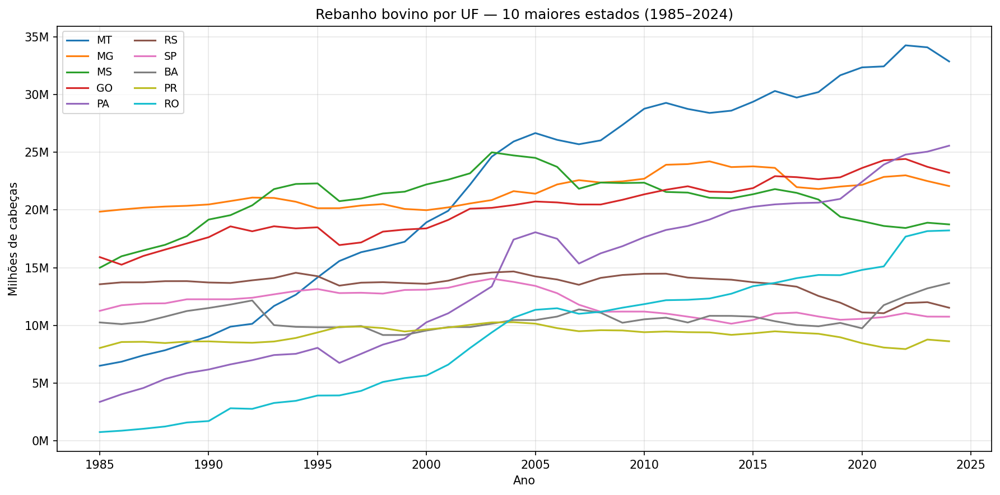
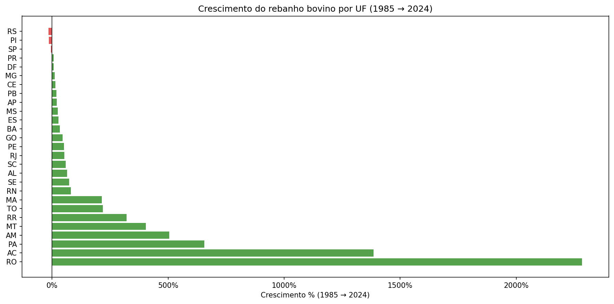

Por que a média cresce mais que a mediana?
O rebanho bovino total no Brasil cresceu de aproximadamente 150 para 230 milhões de cabeças entre 1985 e 2024. Contudo, esse crescimento não é igualitário entre os municípios. A média por município sobe de ~31.500 para ~42.000 — enquanto a mediana permanece incrivelmente estável em torno de 14.000 a 15.000. Isso sugere que a pecuária está se concentrando: grandes polos puxam a média para cima, enquanto o município típico (representado pela mediana) praticamente não altera o tamanho do seu rebanho.
Dois recortes, duas histórias
Todos disponíveis
Utiliza todos os municípios com dado válido em cada ano (~4.100 em 1985 → ~5.500 em 2024). É a série mais completa, mas carrega um viés de composição: municípios novos (geralmente menores) diluem a média, enquanto os grandes a elevam.
Balanced Panel
Restringe a amostra aos ~4.037 municípios com dados presentes em todos os anos entre 1985 e 2024. Isso elimina o viés de entrada e saída. Com uma base fixa, a divergência entre média e mediana comprova que a concentração do rebanho é um fenômeno estrutural e não um artefato administrativo.
O que os dados mostram


Panorama e Dinâmica Regional




Replicação e Estrutura do Projeto
Todo o fluxo de trabalho está documentado. A estrutura de diretórios abaixo reflete a pasta Trabalho paralelo/, contendo scripts Python para raspagem do SIDRA, dados processados e códigos geradores das figuras.
- README.md
-
scripts/
- coleta_ppm_br_bovino.py
- figura_media_mediana_anual.py
- data/raw/ppm_br/
-
data/processed/
- ppm_br_bovino_municipal.csv
- ppm_br_bovino_stats_municipal.csv
- ppm_media_mediana_anual.csv
- outputs/
pandas, sidrapy, matplotlib) e execute:
python scripts/coleta_ppm_br_bovino.pyO script baixará os dados em cache, estruturará o painel e exportará os CSVs. Utilize
--force para contornar o cache e baixar os dados brutos novamente.
Acesse os dados na nuvem
Uma pasta pública no Google Drive contém todos os CSVs processados e figuras em alta resolução. Ideal para quem deseja explorar os dados sem rodar a rotina de coleta.
Abrir Google Drive ↗Notas Metodológicas
- A PPM sofreu alterações metodológicas em 1981, 1989 e 2013. A série 1985–2024 pode apresentar saltos ou descontinuidades associadas a essas revisões.
- Municípios emancipados ou extintos no período apresentam séries incompletas. A variável
n_anospermite controle sobre a completude da amostra. - Valores ausentes (reportados como
"..","-","..."no SIDRA) foram codificados comoNaNdurante o pré-processamento.